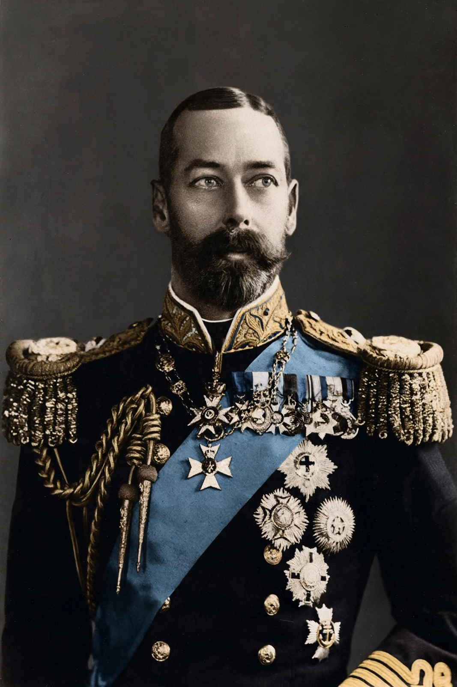

George V

George V (George Frederick Ernest Albert; 3 June 1865 – 20 January 1936) was King of the United Kingdom and the British Dominions, and Emperor of India, from 6 May 1910 until his death in 1936. He was the second son of Albert Edward, Prince of Wales (later Edward VII), and grandson of Queen Victoria. As a young man he served in the Royal Navy and became heir to the throne on the death of his elder brother, Prince Albert Victor, in 1892.
| Reign | 6 May 1910 – 20 January 1936 |
|---|---|
| Coronation | 22 June 1911 |
| Predecessor | Edward VII |
| Successor | Edward VIII |
| Born | 3 June 1865, Marlborough House, London |
| Died | 20 January 1936, Sandringham House, Norfolk |
| Spouse | Mary of Teck |
| House | Saxe-Coburg and Gotha; Windsor (from 1917) |
Early life and marriage
George was educated privately and then trained as a naval cadet at Dartmouth, serving at sea for over a decade. After his brother's death from influenza in 1892, he was created Duke of York and in 1893 married Princess Victoria Mary of Teck, his brother's former fiancée. They had six children, including the future Edward VIII and George VI.
Reign
George succeeded his father in 1910 amid the constitutional crisis over the "People's Budget" of David Lloyd George. He reluctantly agreed to create enough Liberal peers to pass the Parliament Act 1911, which permanently curtailed the veto of the House of Lords. He was crowned in June 1911 and later that year travelled to India for the Delhi Durbar, the only British monarch to attend his own durbar as Emperor of India.
During the First World War, amid anti-German feeling, he relinquished German titles and in July 1917 renamed the royal house from Saxe-Coburg and Gotha to Windsor; his cousin Kaiser Wilhelm II was among the enemy monarchs, while Tsar Nicholas II of Russia, another cousin, was denied asylum in Britain and executed with his family in 1918. George worked to steady the monarchy as thrones fell across Europe.
Later years
His reign saw the rise of socialism, communism and fascism, Irish independence and the creation of the Irish Free State, and the Statute of Westminster 1931, which recognised the Dominions as autonomous equals. He appointed the first Labour government in 1924 and, during the crisis of 1931, played an active role in forming the National Government under Ramsay MacDonald. In 1932 he inaugurated the royal Christmas radio broadcasts, a tradition that continues. He celebrated his Silver Jubilee in 1935, remarking with surprise at his popularity: "I cannot understand it, after all I am only a very ordinary sort of fellow."
George, a heavy smoker, suffered recurring bronchitis and chronic obstructive pulmonary disease. He died at Sandringham on 20 January 1936; his physician, Lord Dawson of Penn, later admitted to hastening the end with injections of morphine and cocaine, a revelation published only in 1986. He was succeeded by Edward VIII, whose abdication within the year brought George VI to the throne.